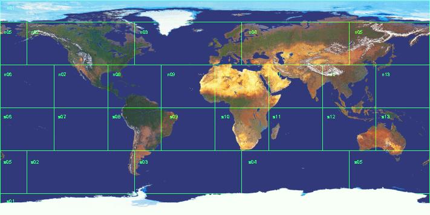

<h1><span class="sc">Universe</span>:
Earth as a Size 5 World</h1>

<p></p>


<p><em><a href="/Universe/size5earth.html">Return to "Earth as
a Size 5 World"</a></em><br />
<em><a href="/Universe/">Return to <span class="sc">Universe</span> pages</a></em><br />
<em><a href="/">Return to Jim Goltz's home page</a></em></p>

<address>James P. Goltz &lt;<a href=
"mailto:goltz@mmert.org">goltz@mmert.org</a>&gt;</address>
</body>
</html>

